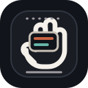

SONMALGWAN · CAPTION FOR SIGN
손말관
마이크나 문장으로 입력하면 분석된 수어 영상을 순서대로 재생합니다.
입력 대기
준비됨
영상 재생
글자 크기
- 01말하거나 문장 입력
- 02수어 표현으로 분석
- 03영상이 순서대로 재생
손말관 상영 대기 중
문장을 수어 표현 단위로 정리하고, 국립수어사전의 영상 정보를 찾아 자막처럼 순서대로 재생합니다.
전문가 피드백
분해된 단어가 자연스러운지 짧게 남겨주세요.
대기
손말관은 손동작 하나를 단어로만 보지 않고, 표정과 맥락이 함께 움직이는 언어로 바라보려는 시도입니다. 더 많은 사람들이 수어를 보고 연습하며, 농인들을 이해하는 계기가 되었으면 좋겠습니다.